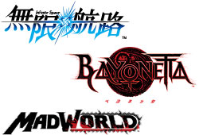
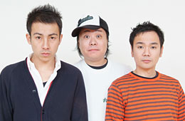

今年のステージイベントの録画配信は終了いたしました。
ご視聴ありがとうございました。


2008.10.21
2008.10.17
- 【ステージイベント】ライブ映像（録画）配信
2008.10.09
- 【プロモーションムービー】公開
- 【ステージイベント】ライブ映像配信
- 【ブースレポート】公開
2008.10.08
- モバイルサイトオープン！
2008.09.29
- 【ラインナップ（SEGA）】公開
- 【ラインナップ（セガパートナーズ）】公開
- 【ステージイベント】公開
- 【グッズプレゼント】公開
ステージイベント（録画）配信 終了
2008/12/12
ステージイベント ライブ映像配信(終了)
2008/10/12
今年のライブ映像配信は終了いたしました。ご視聴ありがとうございました！
【視聴期間】2008/10/9（木）〜10/12（日）
【視聴時間】10:00〜17:00
※各ステージのゲストについては、特設サイト内「ステージイベント」にてご確認ください。一部、中継を行わないステージがあります。予めご了承ください。
※映像をご覧いただくにはWindows Media Playerが必要です。一部ステージについては、ゲームショウ終了後に期間限定で配信をいたします。
※本コンテンツにて提供される全ての内容（画像・映像・音声）の録画、録音及び保存、複製、転載を禁止します。
ステージイベント概要
2008/9/29
東京ゲームショウ２００８セガブースのステージは熱い！会期中毎日異なったステージイベントを開催します。豪華ゲストが登壇するステージも盛り沢山！お見逃しなく。
さらに、東京ゲームショウにご来場できない方のために、４日間ともインターネットでのLIVE中継を行います。ぜひお楽しみください。
※一部、LIVE中継できないステージもございます。ご了承下さい。
※整理券が必要なステージイベントもありますので、詳細をご覧ください。
龍が如く３
2008/9/29
男達の熱いドラマと生き様を描き続ける龍が如くシリーズ待望のナンバリング最新作を、名越総合監督がゲストを向かえストーリー、ゲームシステムなどを最新映像を交え紹介します。
この最新映像を見逃すな！
- 【日程】
- 10月9日（木）13：00〜13：45 ※記者発表会となります。
- 【出演】
- 名越 稔洋（龍が如く総合監督）
- スペシャルゲスト
- 【日程】
- 10月10日（金）13：00〜13：30
- 【出演】
- 名越 稔洋（龍が如く総合監督）
- 小悪魔agehaモデル
- 荒木 さやか★桜井 莉奈★武藤 静香（キャバクラ嬢 役）
※桃華 絵里さんが都合により登壇できなくなりました。ご了承ください。
- 【日程】
- 10月11日（土）14：30〜15：00
- 【出演】
- 名越 稔洋 （龍が如く総合監督）
- 小悪魔agehaモデル
- 荒木 さやか★桜井 莉奈★武藤 静香（キャバクラ嬢 役）
※桃華 絵里さんが都合により登壇できなくなりました。ご了承ください。
★龍が如くPRESENTS 神室町RADIO STATION公開録音
最終日１２日には龍が如くポータルサイトで絶賛放送中の「神室町RADIO STATION」の公開録音を行います。
- 【日程】
- 10月12日（日）14：30〜15：00
- 【出演】
- 横山 昌義（龍が如くシリーズ シナリオ、演出担当）
- 黒田 崇矢（桐生 一馬役）
- 宇垣 秀成（真島 吾朗役）
レッツタップ
2008/10/2
世界初！
コントローラを持たずに遊ぶ新感覚ゲームが登場！
中裕司氏がゲストを交えて、プロペとして初となる2タイトルを紹介。
ゲーム界の常識を打ち破る、「全く新しいゲームのかたち」に乞うご期待！
- 【日程】
- 10月9日（木）15：30〜16：00
- 【出演】
- 中 裕司（株式会社プロペ 代表取締役社長）
- 為末 大（北京オリンピック400mハードル日本代表）
- 【日程】
- 10月12日（日）15：30〜16：00
- 【出演】
- 中 裕司（株式会社プロペ 代表取締役社長）
428 〜封鎖された渋谷で〜
2008/9/29


サインドノベルの集大成大作「４２８」を、総合監督のイシイジロウと主要キャスト総出演によるトークショウを開催！作品の魅力や役柄への思いなどを熱く語ります。
とっておきの情報も発表される！
- 【日程】
- 10月12日（日）13：30〜14：00
- 【出演】
- イシイ ジロウ（総合監督）
- 天野 浩成（加納 慎也 役）
- 近野 成美（ひとみ 役）
- 中村 悠斗（遠藤 亜智 役）
- 北上 史欧（御法川 実 役）
- 小山 卓治（大沢 賢治 役）
- タマ（？？？？？？）
※ステージに観覧には整理券が必要です。
整理券は12日(日)会場時間より、セガブース前にて配布。先着３００名様。
不思議のダンジョン
風来のシレンDS2 〜砂漠の魔城〜
風来のシレンDS2 〜砂漠の魔城〜
2008/9/29
「風来のシレンGB2」をベースに、新ダンジョン、新イベント、新キャラクターそしてネットワーク機能を搭載した「不思議のダンジョン 風来のシレンDS2〜砂漠の魔城〜」の魅力をタップリとお伝えします。
そして！プロモーションキャラクターに決定した「JERO」が颯爽とステージに登場しあの歌を熱唱!?
- 【日程】
- 10月10日（金）12：00〜12：30
- 【出演】
- JERO（プロモーションキャラクター）
※株式会社チュンソフトの中村社長が都合により登壇できなくなりました。ご了承ください。
セガXプラチナゲームズ プロジェクト
2008/9/29

５月の衝撃の業務提携発表以来、あえて沈黙を守り続けてきたこのビックプロジェクトの
全貌を、遂に披露できる機会をご用意しました。
プラチナゲームズのトップクリエーターをステージ迎え、「無限航路」「BAYONETTA（ベヨネッタ）」
「MADWORLD」を世界初公開驚愕映像の披露を含め、一瞬たりとも目を放せないトピックス
連続のステージです。
- 【日程】
- 10月9日（木）12：00〜12：45 ※記者発表会となります。
- 【タイトル】
- BAYONETTA（ベヨネッタ）／無限航路／MADWORLD
- 【出演】
- 宮崎 浩幸（株式会社セガ CS研究開発本部 本部長）
- ＜プラチナゲームズ株式会社＞
- 三並 達也（代表取締役社長）
- 稲葉 敦志（無限航路プロデューサー）
- 神谷 英樹（BAYONETTAディレクター）
- 橋本 祐介（BAYONETTAプロデューサー）
- ＜株式会社ヌードメーカー＞
- 河野 一二三（代表取締役／無限航路ディレクター）
- 【日程】
- 10月11日（土）13：30〜14：15
- 【タイトル】
- BAYONETTA（ベヨネッタ）／無限航路／MADWORLD
- 【出演】
- ＜プラチナゲームズ株式会社＞
- 稲葉 敦志（無限航路プロデューサー）
- 神谷 英樹（BAYONETTAディレクター）
- 橋本 祐介（BAYONETTAプロデューサー）
- ＜株式会社ヌードメーカー＞
- 河野 一二三（代表取締役／無限航路ディレクター）
シャイニング・フォース フェザー
2008/9/29
シャイニング・フォース フェザーの魅力を下里プロデューサー自らが語ります。
そしてゲストには、開発に係わったクリエーター陣を迎え、ゲームシステムやキャラクターなどタイトルの魅力をタップリと紹介。お見逃しなく！
- 【日程】
- 10月11日（土）15：30〜16：00
- 【出演】
- 下里 陽一（プロデューサー）
- 村井 知幸（株式会社フライト・プラン）
- 他予定
セブンスドラゴン
2008/9/29
ニンテンドーDSのためのRPG！セブンスドラゴン。
小玉プロデューサーとサウンドコンポーザーの古代氏、そして特別ゲストにイソッチこと磯村知美さんを
迎え、セブンスドラゴンの魅力とその全貌を語ってくれます。お見逃しなく！
- 【日程】
- 10月12日（日）12：30〜13：00
- 【出演】
- 小玉 理恵子（プロデューサー）
- 古代 祐三（サウンドコンポーザー）
- 磯村 知美（特別応援団）
ファンタシースターZERO
2008/9/29

ファンタシースターシリーズ初のニンテンドーDSタイトルとして登場する本格コミュニケーションRPG。
酒井プロデューサー自らファンタシースターZEROの魅力を語ってくれるだけではなく特別ゲスト
を迎え、イベントを楽しくそしてカッコ良く開催します！
- 【日程】
- 10月10日（金）14：00〜14：30
- 【出演】
- 酒井 智史（プロデューサー）
- 【日程】
- 10月11日（土）12：15〜13：00
- 【出演】
- 酒井 智史（プロデューサー）
- 我が家（特別ゲスト）
ブレイザードライブ
2008/9/29
コミック雑誌月刊少年ライバルとのコラボレーションにより生み出されたこのタイトルの熱いバトルは必見！
今回はスペシャルゲストとして、主題歌を歌う「サイキックラバー」によるミニLIVEを開催！
- 【日程】
- 10月11日（土）16：25〜16：55
- 【出演】
- サイキックラバー
※11日のフィナーレステージとなります。
初音ミク -Project DIVA-（仮称）
2008/9/29
いよいよPSPに降臨するリズムゲーム！初音ミク -Project DIVA-（仮称）の楽しいトークイベントを声優の藤田咲さん、下田麻美さんを迎え開催します。どんなサプライズが飛び出すか！？お見逃しなく！
- 【日程】
- 10月12日（日）11：30〜12：00
- 【出演】
- 藤田 咲
- 下田 麻美
※ステージに観覧には整理券が必要です。
整理券は12日(日)会場時間より、セガブースにて配布。先着３００名様。
internet Adventure 〔iA〕
2008/9/29


インターネットを見える形にした、新感覚ウェブブラウザ！
それがinternet Adventure 〔iA〕。
このステージでは開発プロデューサーと、iモード®でネットワーク業界に革命をもたらした夏野氏を迎えて、その楽しさと便利さを伝えます。
- 【日程】
- 10月9日（木）14：00〜14：30
- 【出演】
- 夏野 剛（株式会社セガサミーホールディングス取締役）
- 木岡 勝利（プロデューサー）
カルドセプトDS
2008/9/29
シリーズ10周年を迎えたカルドセプト！
大宮ソフトの鈴木氏、イラストレーターの加藤氏、中井氏を迎え、カルドセプト誕生から
最新作カルドセプトDSまでの10年間を、懐かしいイラストや最新のカードイラストを紹介しながら今まで
語られることがなかったエピソードや開発の苦労話しなどを披露。
- 【日程】
- 10月11日（土）11：15〜11：45
- 【出演】
- 鈴木 英夫（有限会社大宮ソフト 代表取締役社長）
- 加藤 直之（イラストレーター）
- 中井 覺 （イラストレーター）
フィナーレライブ
2008/9/29
ソニックアドベンチャーより10年！ソニックの歴史を音楽と共に振り返る！
そして龍が如くシリーズの最新曲を披露！龍が如く、龍が如く３のゲーム内楽曲のライブが実現！ラストには東京ゲームショウ会期中の映像をバックに・・・グランドフィナーレ。
- 【日程】
- 10月12日（日）16：25〜16：55
- 【出演】
- Johnny Gioeli & Jun Senoue as Crush 40
- 庄司英徳
- MAKOTCH（ゲスト）
DSでRPG！
2008/9/29
セガが年末から来春に向けて力を入れて送り出す、ニンテンドーDSのRPGタイトルを一気に映像で紹介！
【対象タイトル】
◆ファンタシースターZERO
◆シャイニング・フォース フェザー
◆セブンスドラゴン
◆無限航路
◆不思議のダンジョン 風来のシレンDS2 〜砂漠の魔城〜
【日程】毎日
サカつくDS タッチ＆ダイレクト
2008/9/29

[本サービスに関するお問い合わせはこちら]
※本サイト上で使用されている全ての画像、イラスト等の無断転載を禁じます。
※本サイトを正常にご覧いただくには、最新のFlashPlayerが必要です。